AI Academy · Level 2 · Grade 7 · Week 23 · Student lesson
Recommendation Scores
Learn to understand, design, build, test and explain AI systems responsibly.
Project: Transparent Book Recommender
Before you start
Week 21: weighted feature contributions are added.
Plan time to read, investigate and explain. Keep predictions separate from observations.
Student lesson · 1 of 14
Your mission
Your learning target
I can compute a weighted score.
I can apply hard constraints before ranking.
I can explain how weight choices change outcomes.
Remember before reading
Close your notes first. A rough first answer helps us choose the right starting point; it is not a score for your ability.
Without opening the old lesson, explain one key idea from Nearest Neighbor Reasoning. Give an example and a mistake that the idea helps you avoid.
Without opening the old lesson, explain one key idea from Repair Bias in Data. Give an example and a mistake that the idea helps you avoid.
Without opening the old lesson, explain one key idea from Noise and Outliers. Give an example and a mistake that the idea helps you avoid.
After trying, check the relevant lesson or ask your teacher. Change the part of your explanation that the evidence shows was wrong.
Week 23: Recommendation Scores
A weighted score expresses priorities but also embeds choices.
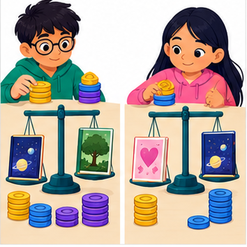
THINKER MISSION
Create two user profiles and calculate book rankings.
Thinker name and date:
Readiness for the connected explanation
Which is closer under absolute-gap distance: a gap of 2 or a gap of 5?
This week’s end goal
By the end, I can rank only eligible options with a transparent weighted score.
Student lesson · 2 of 14
Notice the evidence
PICTURE STORY
Notice → Predict → Explain
Begin with visible evidence. Do not explain more than the picture and information support.
MYSTERY
The learners must use recommendation scores to solve a problem. What information do they have? What decision or calculation do they make? What would count as evidence that it worked?
Three observations (what you can point to):
My prediction and the clue supporting it:
A closer explanation
A fictional activity chooser uses enjoyment and learning ratings from 0 to 5. Its score is 2 times enjoyment plus learning. The activity must also take at most 20 minutes. Duration is a hard requirement; a high score cannot compensate for exceeding it.
Student lesson · 3 of 14
See how it works
VISUAL MECHANISM
Input → Process → Output
Trace the information. At each stage, ask what changed and how you could test it.
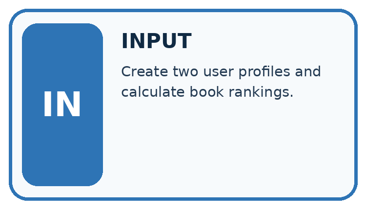
↓
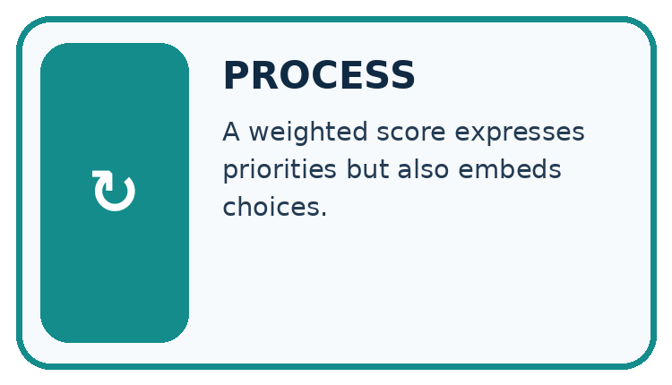
↓
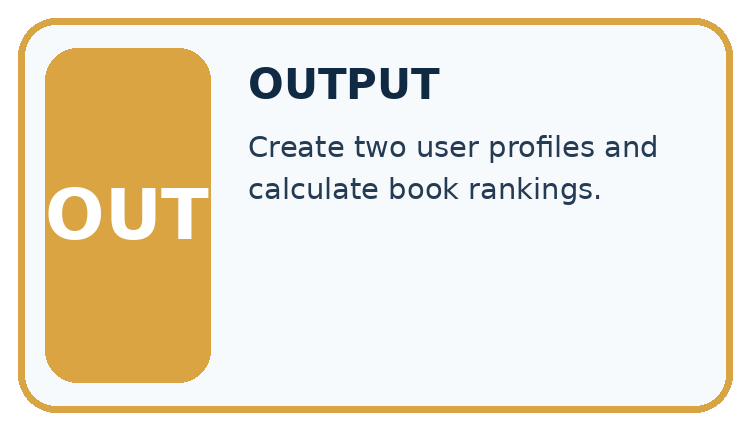
Which stage could fail even when the other two are correct? Explain:
A closer explanation
options = [{"name": "A", "fun": 4, "learning": 2, "minutes": 15},
{"name": "B", "fun": 3, "learning": 5, "minutes": 25}]
for item in options:
if item["minutes"] <= 20:
score = 2 * item["fun"] + item["learning"]
print(item["name"], score)Follow the evidence
Only A is printed, with score 10. If B took 20 minutes it would qualify and have the higher score 11. The inclusive boundary matters. Ratings and weights are invented for practice and require justification before use in a real decision.
Check must-have rules before scoring
Make two decisions in order. First check the duration: A takes 15 minutes and qualifies under the 20-minute limit; B takes 25 minutes and does not. Then calculate scores for eligible choices. A scores 2 times 4 plus 2, or 10. B would score 11, but that score cannot remove the time requirement. Keep the rejection reason beside B instead of calling it a worse-scoring activity.
Connect the picture and the explanation
Point to the input, the deciding step and the result in this week’s visual. Explain the same step in ordinary words. A picture helps when you can say what each part represents.
Student lesson · 4 of 14
Compare the cases
CASE GALLERY
Four Tests, Four Kinds of Evidence
A system is not understood until it survives more than one comfortable example.


NORMAL CASE: predict and name evidence. BOUNDARY CASE: predict and name evidence.


MISSING INFORMATION: predict and name evidence. TRANSFER CASE: predict and name evidence.
Which case is most likely to reveal a hidden assumption? Why?
Change one thing in the pictured case
Change: Change interest weight from 2 to 3, keeping time limit 14.
Prediction: A scores 11; C also scores 11; tie-by-ID chooses A.
Reason: B remains too long; changing preferences changes only ranking of A and C.
Student lesson · 5 of 14
Words that unlock the idea
VOCABULARY LAB
Words You Can Use to Reason
A definition matters when you can recognize the idea, use it, and contrast it with a near-miss.
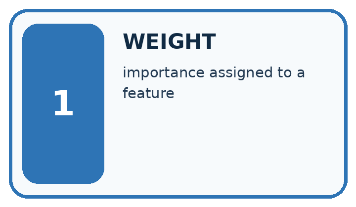
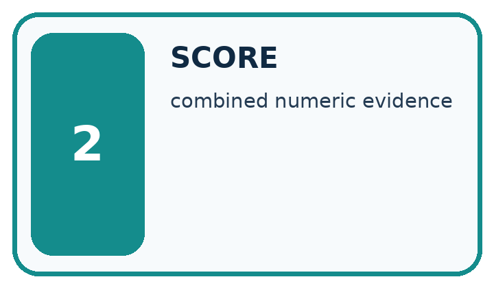
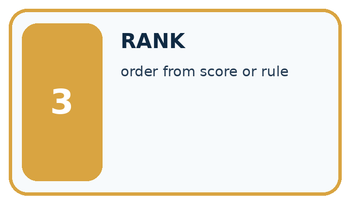
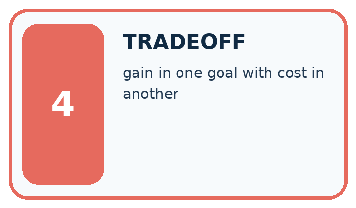
| Word | My own example | Not this / boundary |
|---|---|---|
| weight | A multiplier controlling how strongly a feature or value contributes to a calculation. | |
| score | A numerical value assigned using a specified rule; it is not automatically a probability. | |
| rank | Place candidates in an order using a declared comparison rule. | |
| tradeoff | A situation where improving one desired property can make another harder to achieve. |
Words used in the closer explanation
| Word | Meaning |
|---|---|
| Constraint | A requirement an option must meet |
Student lesson · 6 of 14
Follow a worked example
WORKED EVIDENCE
Reason Step by Step
Predict first. Then check each step. A correct answer without visible reasoning is incomplete evidence.
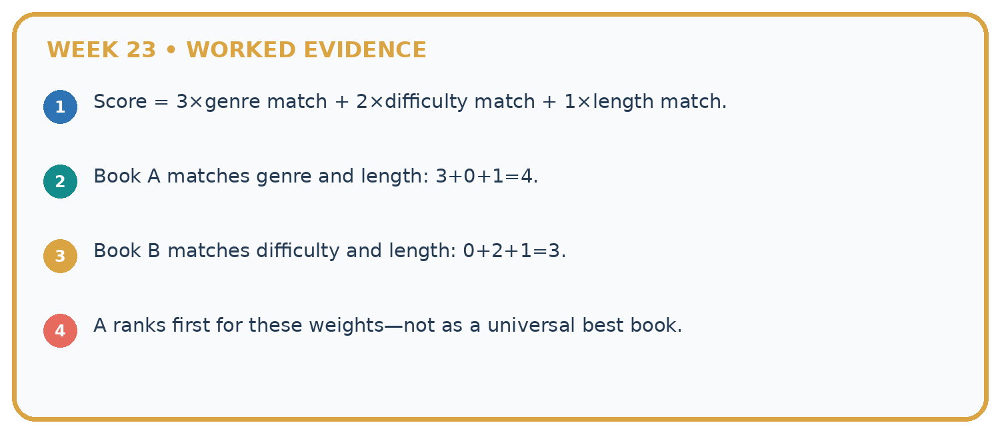
1. Score = 3×genre match + 2×difficulty match + 1×length match.
2. Book A matches genre and length: 3+0+1=4.
3. Book B matches difficulty and length: 0+2+1=3.
4. A ranks first for these weights—not as a universal best book.
Recalculate, retrace, or restate the reasoning in your own representation:
CHECK Did the evidence answer the exact question? Did the total, path, or source record stay consistent?
A closer explanation
Learn from the worked case
Cover the result before checking it. Say what is given, choose the procedure, and follow one step at a time. Then uncover the result and explain your first mismatch. Ask why a step is allowed, not only what number it produces.
A pictorial worked case: Recommendation Scores
A fictional book-activity chooser has a 14-minute limit.
The facts we will use
Score=2×interest+practice. A=(interest3,practice2,time14); B=(4,3,15); C=(2,5,12).
Require whole nonnegative feature values; time must be at most the limit. Highest score wins; tie by ID.


Read the picture one step at a time
Why this result follows
A score combines preferences according to explicitly chosen weights; it does not erase hard constraints. Computing a high score for an excluded item can be useful in an audit, but it must not allow that item back into the candidate set. Store both eligibility reasons and score components for explanations.
What this example does not establish
Toy interest scores are supplied inputs, not measured enjoyment or a universal definition of a good activity.
Student lesson · 7 of 14
Find and repair a mistake
ERROR DETECTIVE
Compare → Diagnose → Repair
Do not patch the answer. Find the earliest unsupported assumption, wrong step, or weak evidence.
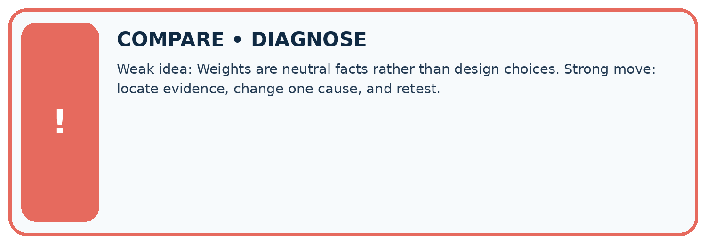
| Evidence record | Expected | Actual | Likely cause / next test |
|---|---|---|---|
| normal case | works | ||
| boundary case | stated rule | ||
| missing input | safe response | ||
| fresh transfer | generalizes |
Repair one cause. Why is this repair better than changing several things?
A closer explanation
Weights represent preferences, not a discovered truth. Explain who chose them and test whether small changes alter the recommendation. Avoid claiming that a larger score proves greater educational value.
Student lesson · 8 of 14
Practise together
LOGIC STUDIO
Trace Before You Run
Block code, pseudocode, tables, and diagrams are different ways to expose the same reasoning.

SET evidence_record PREDICT expected_result RUN one normal case and one boundary case COMPARE actual_result with expected_result IF different: locate first cause; change one factor; RETEST EXPLAIN result, limitation, and next safe step
Trace one input. Which line changes the state or chooses a path?
A closer explanation
Choosing the highest score and only then ignoring its duration breaks the requirement. Filter for eligibility first. If no item qualifies, report no eligible option instead of relaxing a requirement silently.
Practise with less help: Check a boundary
Use workbook W2 for the connected example “Weighted scores and constraints”. First fill the input and rule boxes. Try the middle steps before asking for a hint. After a hint, try the next step yourself.
| Plan | Do | Check |
|---|---|---|
| What is given? Which rule or procedure applies? | Record each intermediate step. | Does the result follow? What remains unknown? |
Explain your trace to a partner. Your partner points to one step to check. Swap roles on the next case. Each person writes their own explanation.
Check your reasoning
Use the worked case for Weighted scores and constraints. Proposed explanation: “A successful run proves the conclusion”. Decide whether this explanation is supported. Point to the step or supplied fact that decides; explain your repair if needed.
Answer on your own before discussion. If you are unsure, say which step you need help with.
Explain the picture
Why does B not become the winner when its score is largest?
This is supported practice. Keep the separately named independent case for an attempt before feedback.
Student lesson · 9 of 14
Run the investigation
EVIDENCE LAB
Predict → Test → Record → Explain
Keep expected and actual results separate. Surprises are useful data when recorded honestly.
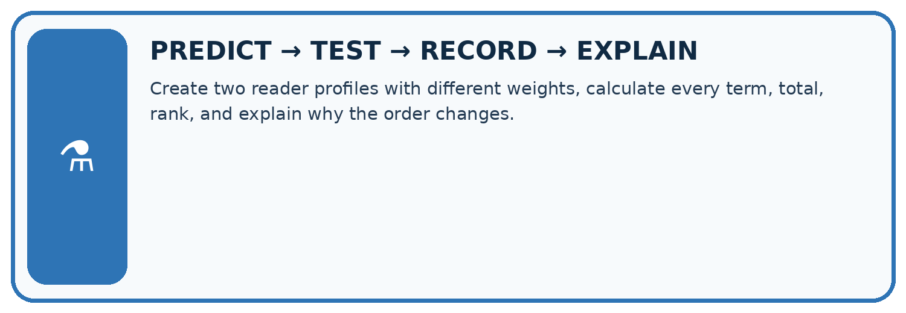
Create two reader profiles with different weights, calculate every term, total, rank, and explain why the order changes.
| Test / input | Prediction | Actual | Evidence / calculation | Change or keep? |
|---|---|---|---|---|
| normal | ||||
| boundary | ||||
| missing | ||||
| fresh transfer |
What did the hardest test teach you that the normal test did not?
Plan → try → check
Before trying: what do I expect, and why? While trying: which step could first go wrong? Afterwards: what did I actually observe, and what should change? Keep “not run” if you only traced the procedure.
Student lesson · 10 of 14
Build your understanding
MASTERY
From Knowing the Word to Owning the Idea
Move upward only when you can produce evidence without copying the worked example.

1 • NAME: Define the concept without repeating the textbook.
2 • TRACE: Show the information, state, branch, calculation, or evidence path.
3 • APPLY: Solve a different example independently.
4 • CHALLENGE: Find a boundary case, counterexample, or unfair outcome.
5 • EXPLAIN LIMITS: Say when the result should not be trusted or used alone.
My strongest evidence of independent understanding:
Student lesson · 11 of 14
Connect your project
CUMULATIVE PROJECT
Transparent Book Recommender
Every week adds one inspectable piece. The system must show how it reached a result.
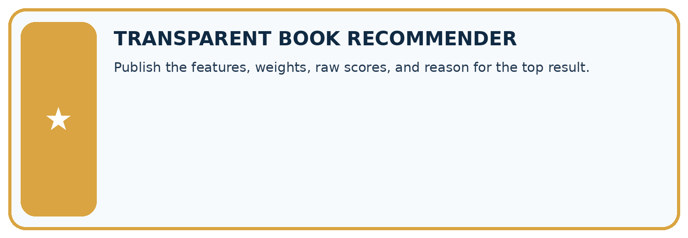
THIS WEEK’S CHECKPOINT Publish the features, weights, raw scores, and reason for the top result.
SYSTEM MAP Reader need → allowed inputs → transparent rule or score → ranked candidates → explanation → test record → human decision
What will you add, change, or verify in the project this week?
What should remain under human control?
RESPONSIBLE DESIGN Collect only necessary information. Show uncertainty and limits. Never confuse a ranking with a fact about a person.
Evidence for your project
Publish the recommender’s constraints, score formula and tie rule; include component-level reasons in each suggestion.
Student lesson · 12 of 14
Show what you know
INDEPENDENT MASTERY PROOF
Explain • Transfer • Test • Defend
Complete this page without copying the worked example. Your reasoning matters more than decoration.
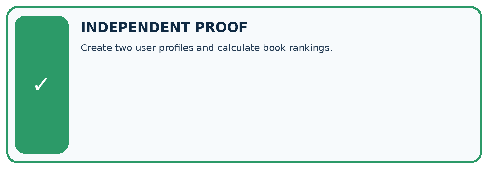
CHALLENGE Create two user profiles and calculate book rankings.
1. My fresh example, trace, calculation, or design:
2. My evidence that it works (include a boundary or missing-data case):
3. One limitation, fairness concern, or situation needing human review:
SELF-CHECK □ I explained the mechanism □ I used evidence □ I tested a fresh case □ I named a limitation □ I can answer ‘why?’
Student lesson · 13 of 14
Study a complete case
Week 23 Worked case
Use the supplied details to practise the weekly concept before attempting the independent question. This case extends the illustrated lesson.
The situation
Score=2 times genre match + length match. A matches both, B genre only, C length only.
The question
Score and rank.
Worked explanation
A=3, B=2, C=1. Weights encode a chosen preference, not universal reader truth.
Explain it in your own words
Which detail supports the answer, and why does it matter?
Trace the supplied case visually
Weighted preferences determine the score
| Evidence or stage | Value or result |
|---|---|
| A | 3 |
| B | 2 |
| C | 1 |
Score=2 times genre match + length match. A matches both, B genre only, C length only.
Score and rank.
A=3, B=2, C=1. Weights encode a chosen preference, not universal reader truth.
Student lesson · 14 of 14
Try a new case independently
Independent case: Choose independently
Limit is 15 minutes. A has fun 3, learning 4, minutes 15; B has 5, 1, 16; C has 2, 5, 12. Calculate scores with 2 * fun + learning and choose.
Attempt this case before feedback. Record any help. Earlier examples below are further practice; a case already practised with feedback cannot establish fresh transfer.
Week 23 Independent application
Close the worked explanation. Apply the idea to this different question without copying.
A recommender gives 3 points for topic match and 1 for difficulty match. Book A matches topic only; B matches difficulty only. Compute scores and justify the ranking.
My answer, with a trace, calculation or supporting evidence
Create and test
Change one relevant detail. Predict the result before testing. Include a boundary or missing-information case when it helps reveal a limit.
My changed input and expected result
Connect to your project
Publish the features, weights, raw scores, and reason for the top result.
The evidence I will keep
Your teacher has the independent answer and scoring criteria. Complete the matching workbook week to keep your practice evidence together.
Transfer practice from the original programme
Score=3×genreMatch+2×short+illustrated. Compute A=[1,0,1], B=[0,1,1], C=[1,1,0]. A reader now requires illustrations. Which book wins after applying that constraint?
Use feedback to improve
Attempt the independent case before hints. Record whether you worked alone, used a hint or followed a model. After feedback, fix the first unsupported step and explain why it changed. A later check uses a changed case, not a copied answer.